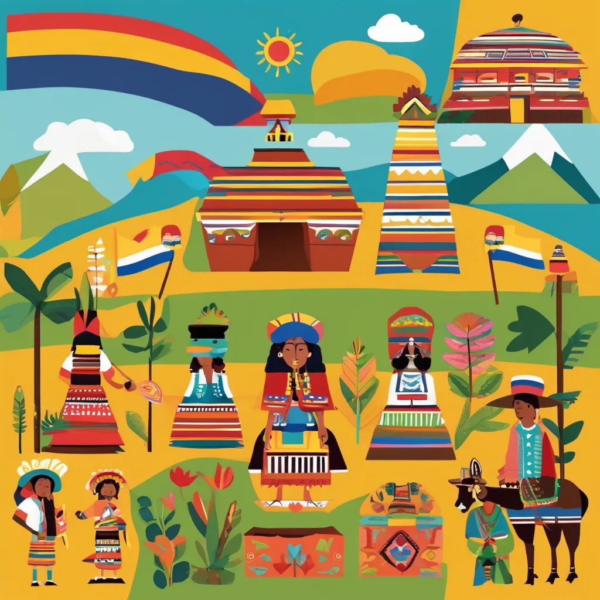
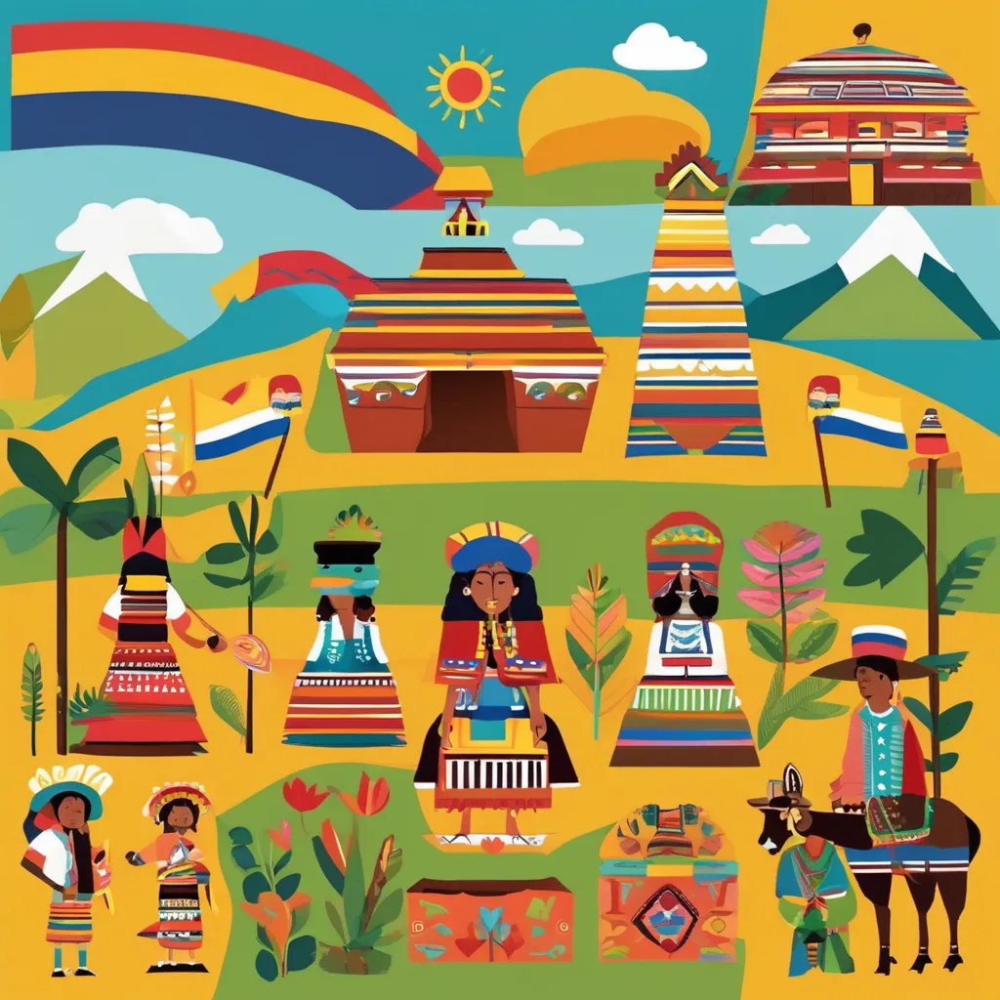

¡Comencemos!
Primeros pasos
Para comenzar vamos a explorar las culturas indígenas que habitaron el territorio colombiano antes de la llegada de los europeos. La primera es respecto a los muiscas, conocidos por su organización social y política avanzada, su economía basada en la agricultura y su habilidad para trabajar el oro. Se puede contar la historia de El Dorado y cómo los muiscas realizaban rituales sagrados en la Laguna de Guatavita. Tambien habitaban los Taironas, los cuales eran Habitantes de la Sierra Nevada de Santa Marta, reconocidos por sus complejas construcciones en piedra y su avanzada agricultura en terrazas. Además, se puede hablar de la fabricación de objetos en oro y cerámica, y por ultimo pero no menos importante los QuimbayaS, los cuales eran Famosos por su habilidad en la metalurgia, especialmente en la fabricación de figuras en oro y tumbaga (aleación de oro y cobre). Se puede mencionar el Tesoro de los Quimbayas como un ejemplo de su destreza.
 

Encuentro de dos Mundos
Ahora una parte muy importante en la historia de colombia es sobre la llegada de los españoles al continente americano y cómo cambió la vida en el territorio colombiano, aqui encontraremos la gran conquista de los españoles hacia el gran territorio colombiano, tambien encontraremos sus consecuencias, como el mestizaje, la imposición de nuevas creencias religiosas, y la explotación de recursos naturales y humanos. : La llegada de Cristóbal Colón y los primeros contactos con los indígenas.
Cuando los españoles llegaron a lo que hoy es Colombia, se encontraron con los pueblos indígenas que ya vivían aquí. Este encuentro cambió mucho la vida de todos. Los españoles impusieron su religión, el cristianismo, y obligaron a muchos indígenas a dejar sus creencias. Además, comenzaron a explotar las riquezas de la tierra, como el oro, y obligaron a los indígenas y esclavos traídos de África a trabajar en condiciones muy duras. De esta mezcla de culturas y personas nació el mestizaje, que es la combinación de los pueblos indígenas, europeos y africanos, dando origen a una nueva sociedad. Aunque fue una época difícil, de este encuentro surgió la diversidad que hoy vemos en Colombia.
¡Oprime para escuchar un dato curioso que te dejara boquiabierto!
Epoca colonial
Hace muchos años, cuando los españoles llegaron a Colombia, comenzó lo que llamamos la época colonial. Durante casi 300 años, Colombia fue gobernada por los españoles y formaba parte de un gran territorio llamado el Virreinato de la Nueva Granada, con su capital en Bogotá. La gente vivía organizada en grupos. En la parte más alta estaban los españoles, luego los criollos (hijos de españoles nacidos aquí), los mestizos (mezcla de indígenas y españoles), los indígenas y, por último, los esclavos africanos, que fueron traídos para trabajar. La economía se basaba en la minería (sacar oro y otros minerales), y el cultivo de productos como el cacao, tabaco y azúcar. Además, la Iglesia Católica era muy importante y ayudaba a educar a la gente, organizaba misiones y construía muchas iglesias.
Camino independencia
Hace más de 200 años, Colombia no era un país libre. Estaba gobernada por los españoles, quienes tomaban decisiones importantes y controlaban todo. Pero, con el tiempo, las personas que vivían aquí, especialmente los criollos (hijos de españoles nacidos en América), comenzaron a sentirse incómodos con las reglas de España y querían ser independientes para gobernarse a sí mismos.El grito de independencia ocurrió el 20 de julio de 1810 en Bogotá, cuando la gente se reunió y empezó a decir que ya no quería ser gobernada por España. Después de eso, hubo muchas batallas entre los que querían la libertad y los españoles. Uno de los héroes más importantes fue Simón Bolívar, quien luchó para liberar a Colombia y otros países de Sudamérica. Finalmente, después de muchos años de lucha, Colombia logró su independencia en 1819, y desde entonces comenzó a ser un país libre.
.jpg)
.jpg)
Despues de la independencia de colombia
Después de la Independencia en Colombia Después de que Colombia logró su independencia, el país enfrentó muchos desafíos para consolidarse. Aquí hay algunos puntos importantes:
1. La Gran Colombia 🌎 Uno de los sueños más grandes de Simón Bolívar fue unir a varios países, incluyendo Colombia, Venezuela, Ecuador y Panamá, en una sola nación llamada Gran Colombia. Bolívar pensaba que juntos podrían ser más fuertes. Sin embargo, en 1831, Gran Colombia se disolvió porque los países tenían diferentes intereses y no podían ponerse de acuerdo.
2. Conflictos internos ⚔️ Después de la disolución, Colombia tuvo muchos problemas internos. Hubo guerras civiles donde diferentes grupos peleaban por el poder. Dos guerras importantes fueron la Guerra de los Supremos y la Guerra de los Mil Días. Estas guerras causaron mucho sufrimiento y afectaron la estabilidad del país
3. La Constitución de 1886 📜 En 1886, se creó una nueva Constitución que ayudó a organizar el país y a definir cómo debía funcionar el gobierno. Esta constitución consolidó el poder en el gobierno central y estableció las reglas que regían la vida política de Colombia durante muchos años.
4. Colombia en el siglo XX 🇨🇴 En el siglo XX, Colombia también vivió cambios importantes. En 1903, Panamá se separó de Colombia, pero el país comenzó a modernizarse y a trabajar en la construcción de una democracia más sólida. A medida que pasaron los años, se realizaron esfuerzos para mejorar la educación, la economía y la vida de las personas.